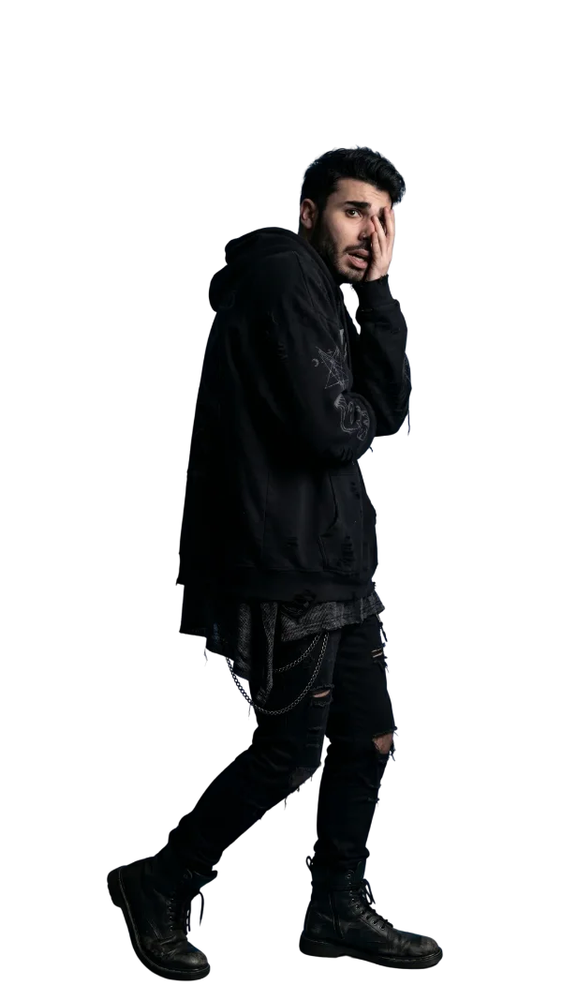
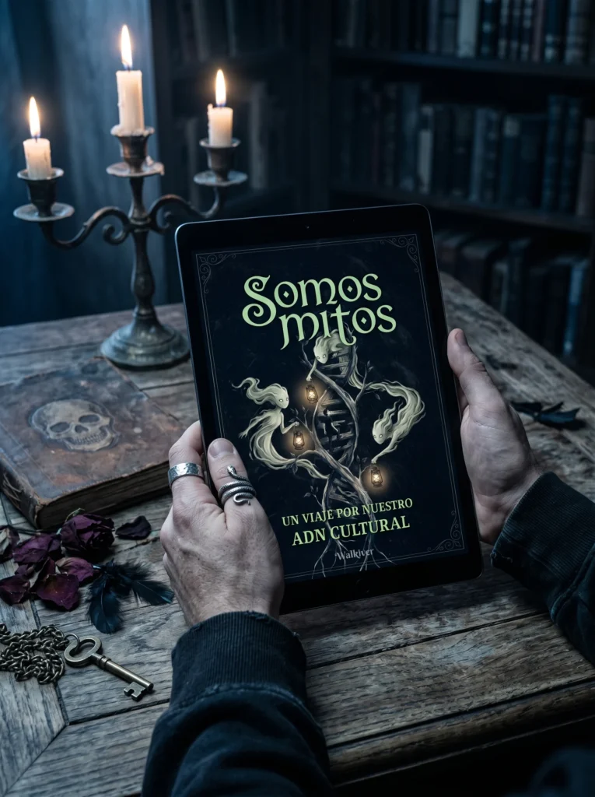
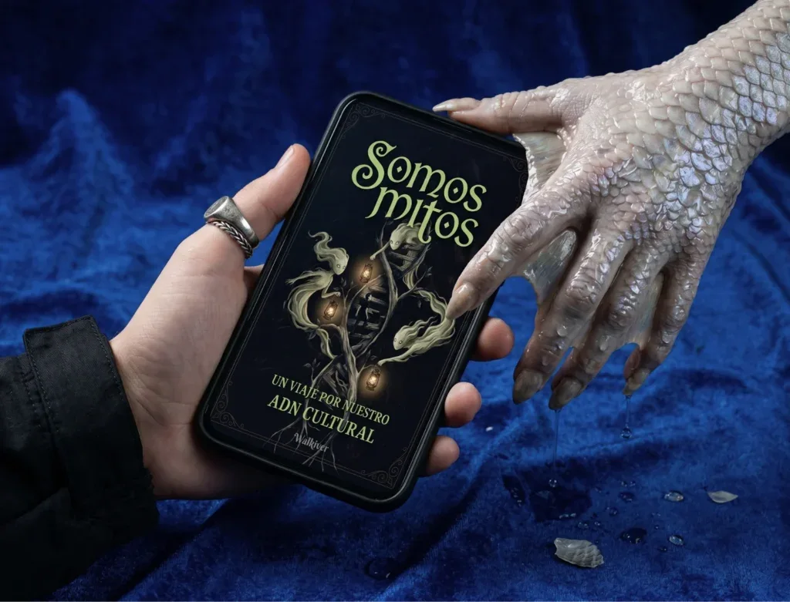

¡Gracias por tu compra!
En las próximas horas te llega el e-book al mail de tu cuenta de PayPal. Si no lo ves, revisá el correo no deseado o escribime a walkiver@gmail.com.
E-book · Somos Mitos
Una guía para entender lo que no tiene forma
Este no es un libro de criaturas. Es un mapa. Un recorrido por los mitos, símbolos y relatos que las culturas humanas usaron para entender lo inexplicable.
Desde monstruos hasta rituales, desde lo sagrado hasta lo prohibido, este e-book te enseña a ver lo invisible como algo vivo.
No es para memorizar. Es para cambiar la forma en la que mirás el mundo.
- 171 páginas
- Texto e ilustraciones
- Acceso inmediato
USD 11,99USD 8,99
Después del pago te envío el e-book al mail de tu cuenta de PayPal.
¿Cómo se recorre?
No se lee como un manual. Se recorre como un mapa.
Está pensado para explorarse en pantalla, desde tu computadora, tablet o celular.
Cada página combina texto e imagen para construir una atmósfera propia.
No está hecho para apurarse, sino para detenerse y mirar distinto.
La idea no es acumular datos, sino empezar a ver conexiones donde antes no las había.
Vista previa
Algunas páginas
Así se ve por dentro: texto e ilustraciones que construyen una atmósfera propia. Tocá una página para verla en grande.

Contenido
¿Qué incluye este recorrido?
- Un viaje por el origen y significado de los mitos.
- La diferencia entre mito, leyenda y folklore (y por qué es importante).
- Cómo los símbolos construyen sentido más allá de lo literal.
- Un viaje por distintas culturas y sus formas de entender lo invisible.
- El papel del miedo, lo sagrado y lo desconocido en las historias humanas.
- La figura del monstruo: qué representa y por qué aparece.
- Cómo los mitos siguen vivos en el mundo actual.
- Conceptos clave explicados de forma clara, sin lenguaje académico.
- Un enfoque que conecta ideas, imágenes y narrativa.
- Ilustraciones originales que acompañan cada parte del recorrido.
Para quién es
Este e-book es para vos si…
- Te interesan los monstruos, las criaturas y los relatos que aparecen en distintas culturas.
- Alguna vez te llamó la atención la mitología, pero no supiste por dónde empezar.
- Te gusta investigar, pero no querés arrancar con libros densos o difíciles de seguir.
- Sentís curiosidad por lo que hay detrás de estas historias, más allá de lo superficial.
- Te interesan los críptidos, lo extraño o lo que no termina de encajar del todo.
- Te gusta lo visual y te atraen las imágenes que acompañan una idea.
- Buscás una primera base para entender mejor este mundo.
- Querés tener un mapa general antes de meterte en cosas más complejas.
- Te interesa conectar estas historias con algo más grande: cultura, simbolismo, significado.
- Sos una persona curiosa, creativa o simplemente alguien que quiere empezar a entender todo esto.

La esencia
Lo que cambia es cómo mirás
Entrás, mirás una página, y algo te queda dando vueltas.
Seguís. Aparece otra imagen, otra idea, otra forma de ver lo mismo.
En algún punto dejás de leer como siempre, y empezás a observar distinto.
Y cuando cerrás el libro, lo que cambia no es lo que leíste.
Es cómo empezás a mirar lo que ya estaba ahí.
Galería
Somos Mitos, en su mundo

Ficha
Detalles del e-book
- Autor
- Walkiver
- Idioma
- Español
- Género
- Mitología
- Lanzamiento
- 22 de abril de 2026
- Formato
- Extensión
- 171 páginas
- Contenido
- Texto e ilustraciones
- Entrega
- Por mail, al confirmarse el pago
- Compatibilidad
- Computadora, tablet y celular
- Devolución
- No se admiten devoluciones en contenido digital
I ¿Cómo accedo a mi e-book?
Es muy simple. Apenas se confirma el pago, te llega un mail con el enlace para descargarlo. También lo vas a ver en la página de confirmación de tu pedido.
Si compraste desde el exterior con PayPal, te lo envío al mail de tu cuenta de PayPal.
II ¿Por cuánto tiempo voy a tener acceso?
El e-book es tuyo: una vez que lo descargás, lo tenés para siempre, en todos tus dispositivos. Te recomiendo guardarlo apenas lo recibas.
III ¿Puedo descargar mi e-book?
Sí. Está pensado principalmente para leerse en pantalla, desde el celular o la computadora, para aprovechar mejor su diseño visual. También podés abrirlo en tu lector de libros preferido.
IV ¿En qué formato viene?
En PDF. Podés abrirlo fácilmente en:
- Android: Google Play Libros
- iPhone / iPad: Apple Books
- Computadora: Adobe Digital Editions
Todas estas opciones son gratuitas.
V ¿Cuáles son los medios de pago?
Si estás en Uruguay, podés pagar con tarjeta de crédito o débito, en efectivo en redes de pago (Abitab o RedPagos) o con Mercado Pago.
Si estás en el exterior, podés pagar con PayPal.
VI ¿Puedo pagar en cuotas?
Sí. En Uruguay podés pagar en cuotas con tarjeta de crédito, según las opciones disponibles al momento del pago.
VII ¿Se puede comprar desde el exterior?
Sí, desde cualquier país. El pago se hace con PayPal, en dólares, y te envío el e-book por mail.
Si tenés cualquier duda, escribime a walkiver@gmail.com.
Contacto
Escribime, te leo
¿Una consulta sobre el e-book o una propuesta? Dejame tu mensaje y te respondo a la brevedad.